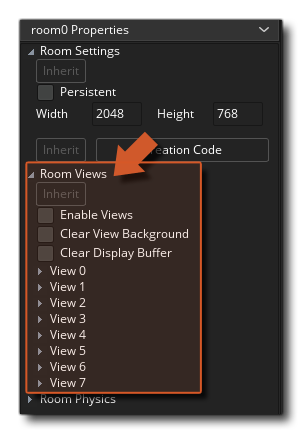
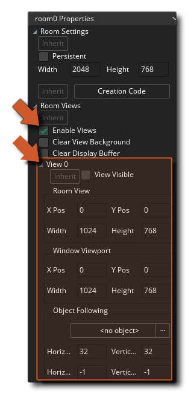
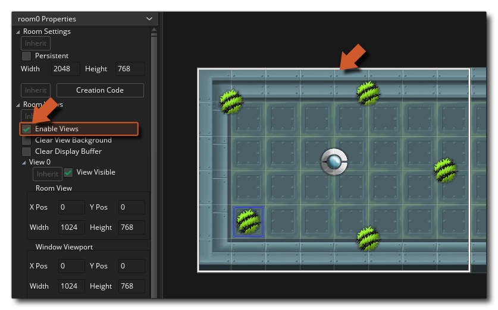
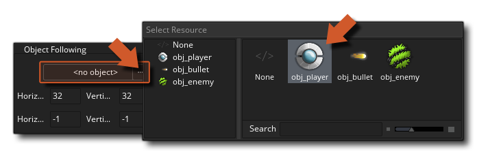
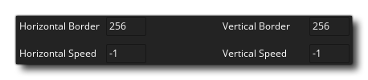

To prevent the issue with the huge window we need to tell GameMaker Studio 2 to only show a portion of the game room using a camera view. We can set this up from the room editor too, from the section titled Views in the Room Properties. Clicking on that section will expand the different properties: 
The first thing to do here is to check the box beside Enable Views. No matter how you set things up, if you don't enable views then nothing will change, so this is very important! Next you need to expand the section on View 0. You can have multiple camera views in a room, and they can all be enabled and displayed at different positions (permitting, for example, a two player split screen game, with a camera view for each player), however for our game we only need one, and that's the camera View 0. 
There are a lot of options here, but the first thing we need to do is switch the view "on". This is done by checking the box labelled View Visible. Even if you have enabled views, if you don't have one that is set to be visible you won't get the desired result. Once it's been checked, you'll see a rectangle appear in the actual room preview to show you where the new view camera will be placed: 
This view camera "rectangle" is defined from the view properties, with the xpos and ypos values being the top left corner of the view, and then the width and height defining the size from that point. You can also set the the camera view port, which is what defines the area of the screen that will be used to display the camera view. Basically, you can set a view camera to be any size, and then set the view port to be a different size and the camera view will be scaled to fit in that space. So you can have a camera view that is 480x320 (for example) but make the camera port 960x640 and the camera view will be scaled up to fit. However for our game we are keeping things simple and all those values can be left at their default settings.
The final thing we need to do is set the Object Following. By default a view camera is static, ie: it won't move unless you code it to, but we can set it to follow an instance of an object automatically and without code using this button: 
Once you've set it to follow the player object, we also need to set the Horizontal Border and Vertical Border values. These dictate how close to the edge of the view the instance needs to be before the view camera will move to follow it. At the moment it's 32px, which means that the player would have to move right up to the edge of the view camera window before it will move to follow, which in an arena shooter like ours is just too small... we want it to move before that so that the player can see what is around them. So, set those values to 256px each: 
Notice we leave the two "speed" values at -1... If we set this then we are telling the view camera to only move by a specific amount each game frame, so that if we set it to (for example) 5, then the view camera will follow the player only 5px per game frame. This can be really useful and can give a nice "catchup" effect if the instance being followed moves faster than the values given, but for our game we want the camera to always stay centered on the player, so we leave it at -1, which is essentially telling the camera view to move "instantly" to the instance being followed position every game frame.
If you run the game now you can see how this all works to make the camera follow the player while they explore a larger room and shoot the enemies...